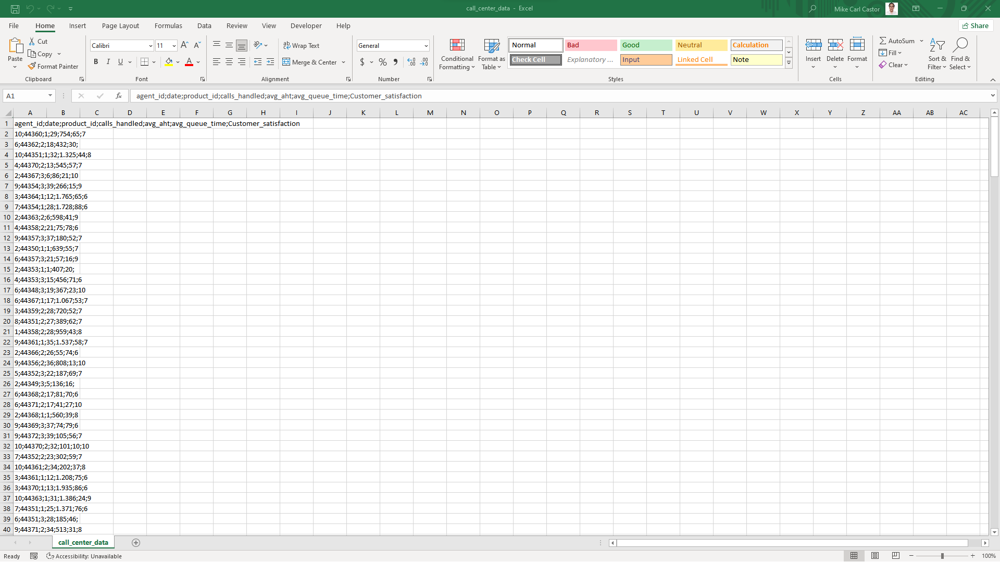
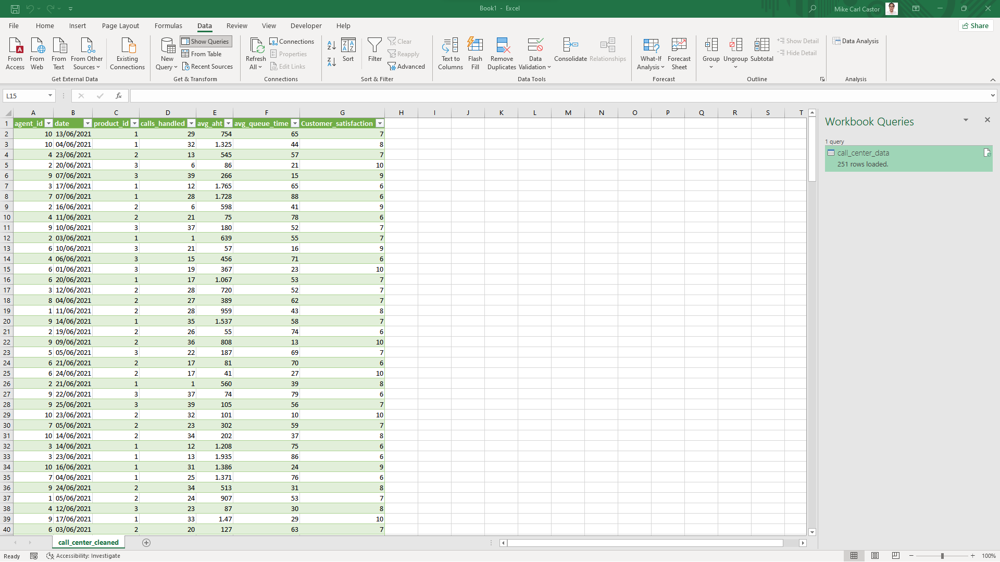
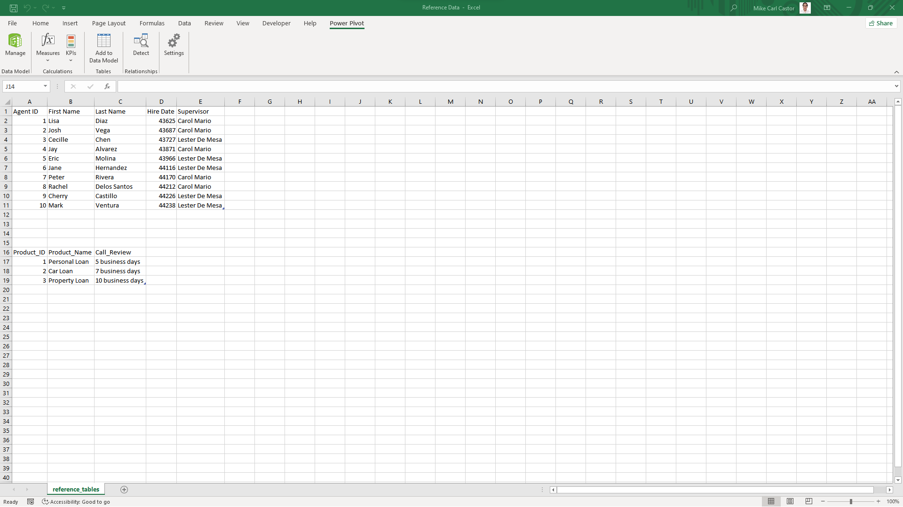

DATA LOADING, CLEANING, & PREPARATION
Step 1. Loading Data Into Power Query for Transformation
Since the file is in CSV format. I have to transform the data first before cleaning it. The image below shows what the raw file looks like if loaded on excel.
To convert the raw file into a readable table, it needs to be imported into Power Query. Upon import, the data will be transformed into a table, removing unnecessary characters. Refer to the video below for a demonstration of the import and transformation process in Power Query.
Step 2. Data Cleaning and Transformation
After successfully loading the data into Power Query, the subsequent task involves data cleaning. Initially, it is imperative to eliminate any duplicate entries within the dataset. Following that, the focus shifts to handling missing values, often referred to as nulls, by either removing them or replacing them with appropriate values. Lastly, the numerical date values need to be converted into proper date data types. The provided video clip demonstrates the complete process of data cleaning.
Loading Transformed Data Into Excel
Upon completing the data cleaning process, I proceeded to load the cleaned data into Excel. I renamed the sheet as "call_center_cleaned". The image below provides a visual representation of how the data appears after being loaded into Excel.
While the data has been transformed and cleaned, there is still a need to add a few columns. As previously mentioned in the "About the Data" section, the dataset includes two reference tables, which will be useful in this context. The image below depicts the appearance of the reference tables.
Step 4. Adding Columns Using XLOOKUP
After copying the reference tables into my call_center_cleaned workbook, I proceeded to add columns to the dataset. The first column I added was for the agents' full names. You can watch the process in the video clip below:
To extract the data in the Hire Date column from the reference sheet, I utilized the XLOOKUP function, similar to what was done for the for the agents' full names. Please play the video clip below to see the process.
In the next step, I integrated data from the product table by extracting the product_name based on the product_id. I utilized the same lookup function for this purpose. You can view the process in the following video clip:
I proceeded to extract the supervisor column, which contains the names of the agents' supervisors. Please refer to the following process:
Step 5. Adding Columns Using Formulas
One notable addition is the tenure column, which reveals the duration of each agent's employment with the company. This calculation involves subtracting the hire date of each agent from the cutoff date, representing the boundary for recording future business transactions in the subsequent reporting period. For a comprehensive demonstration, please refer to the accompanying video clip.
I proceeded to add a week_day column that specifies the day of the week for each transaction. This column was created by extracting the weekday information from the date column. The inclusion of this column will be beneficial for future time series analysis. To gain a more comprehensive understanding of the process, please watch the accompanying video clip.
Lastly, I added the avg_aht_in_minutes column, which represents the average call duration in minutes. To achieve this, I utilized the data from the avg_aht column, which was initially measured in seconds. Since each day contains 24 hours (86,400 seconds), I divided the values in the avg_aht column by 86,400 to convert them into minutes. This conversion allowed me to express the average call duration in a more understandable unit. For a detailed demonstration of the process, please refer to the accompanying video clip.